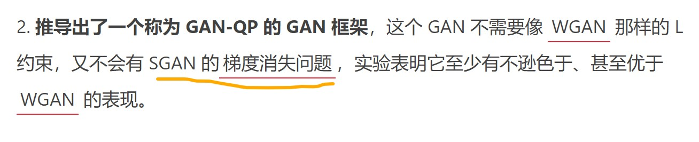

【警告原因不明，怀疑是梯度消失】warning:tensorflow:Grandients_do_not_exist
更新！！！
好像并不是Dropout的原因，在训练SGAN时也出现了同样的警告，即使已经设置了Dropout层的traing=True，怀疑是梯度消失（有文章说是这个 https://www.jiqizhixin.com/articles/2018-11-27-24 ）或爆炸

在本文中，可能设置training=Trur恰好避免了梯度消失或爆炸，只是凑巧而已（猜测）
具体原因后续再来分析，先这样了。
问题提出
基于DCGAN（https://fx0809.gitee.io/2020/10/07/DCGAN/）的代码，想要将生成器和判别器的实现方式改为继承自`tf.keras.Model`类的方式，修改部分的代码如下：
1 | class Generator_model(tf.keras.Model): |
运行全部完整后，发现会不断地弹出warning信息：
1 | WARNING:tensorflow:Gradients do not exist for variables ['discriminator_model/conv2d/kernel:0', 'discriminator_model/conv2d/bias:0'] when minimizing the loss. |
问题解决
把判别器的Dropout层中的traing参数设置为Ture
1 | class Discriminator_model(tf.keras.Model): |
分析
官网关于Dropout层的描述如下
1 | The Dropout layer randomly sets input units to 0 with a frequency of rate at each step during training time, which helps prevent overfitting. Inputs not set to 0 are scaled up by 1/(1 - rate) such that the sum over all inputs is unchanged. |
或许正如in other contexts, you can set the kwarg explicitly to True when calling the layer所说，我们在使用其他方式搭建模型(比如这里的call方法)时，要手动设置training=True。